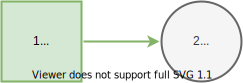
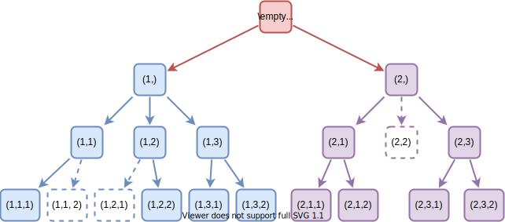

Paths
Effective Paths

It is possible for some combinations of chance or decision states to be unrealizable. We refer to such subpaths as ineffective. For example, the above tree represents the generation of paths where subpaths $𝐒_{\{1,2\}}^′=\{(2,2)\}$, $𝐒_{\{1,2,3\}}^′=\{(1,1,2), (1,2,1)\}$ are ineffective.
Formally, the path $𝐬$ is ineffective if and only if $𝐬_A∈𝐒_A^′$ given ineffective subpaths $𝐒_A^′⊆𝐒_A$ for nodes $A⊆C∪D.$ Then, effective paths is a subset of all paths without ineffective paths
\[𝐒^∗=\{𝐬∈𝐒∣𝐬_{A}∉𝐒_{A}^′\}⊆𝐒.\]
The Decision Model size depends on the number of effective paths, rather than the number of paths or size of the influence diagram directly.
In Decision Programming, one can declare certain subpaths to be ineffective using the fixed path and forbidden paths sets.
Fixed Path
Fixed path refers to a subpath which must be realized. If the fixed path is $s_Y = S_Y^f$ for all nodes $Y⊆C∪D$, then the effective paths in the model are
\[𝐒^∗=\{𝐬∈𝐒∣s_{Y} = S_{Y}^f \forall \ Y \}.\]
Forbidden Paths
Forbidden paths are a way to declare ineffective subpaths. If $𝐬_X∈𝐒_X^′$ are forbidden subpaths for nodes $X⊆C∪D$, then the effective paths in the model are
\[𝐒^∗=\{𝐬∈𝐒∣𝐬_{X} ∉ 𝐒_{X}^′\}.\]
Active Paths
If the upper bound of path probability is zero, its probability is zero, and it does not affect the solution. Therefore, we can consider only the paths with a positive upper bound of path probability. We refer to these paths as active paths. Formally, we define an active path as a path $𝐬$ if all of its chance states are active
\[\begin{aligned} X(𝐬)&↔(p(𝐬)>0)\\ &↔ ⋀_{j∈C} (ℙ(X_j=𝐬_j∣X_{I(j)}=𝐬_{I(j)})>0). \end{aligned}\]
Otherwise, it is an inactive path. We denote the set of active paths as
\[𝐒(X)=\{𝐬∈𝐒 ∣ X(𝐬)\}.\]
The number of active paths is
\[|𝐒(X)|≤|𝐒|.\]
Effective paths are related to active paths, such that, for all $j∈C,$ we have ineffective subpaths
\[𝐒_{I(j)∪j}^′=\{𝐬_{I(j)∪j}∈𝐒_{I(j)∪j} ∣ ℙ(X_j=s_j∣X_{I(j)}=𝐬_{I(j)})=0\}.\]
Generally, the effective paths is a subset of the active paths, that is
\[𝐒^∗ ⊆ 𝐒(X).\]
If there are no other ineffective subpaths, we have
\[𝐒^∗ = 𝐒(X).\]
Notice that, the number of active paths affects the size of the Decision Model because it depends on the number of effective paths.
Compatible Paths
Each decision strategy $Z∈ℤ$ determines a set of compatible paths. We use the shorthand $Z(s) ↔ (q(𝐬 \mid Z) = 1)$, where q is as defined in Path Probability. Formally, we denote the set of compatible paths as
\[𝐒(Z)=\{𝐬∈𝐒 ∣ Z(𝐬)\}.\]
Since each local decision strategy $Z_j∈Z$ is deterministic, it can choose only one state $s_j$ for each information state $𝐬_{I(j)}$. Thus, the number of compatible paths is
\[|𝐒(Z)|=|𝐒|/|𝐒_D|=|𝐒_C|.\]
The compatible paths of all distinct pairs of decision strategies are disjoint. Formally, for all $Z,Z^′∈ℤ$ where $Z≠Z^′$, we have
\[𝐒(Z)∩𝐒(Z^′)=\{𝐬∈𝐒∣Z(𝐬)∧Z^′(𝐬)\}=∅.\]
Locally Compatible Paths
Locally compatible paths refers to a subset of paths that include the subpath $(𝐬_{I(j)}, s_j)$ and thus, represent the local decision strategy $Z_j(𝐬_{I(j)}) = s_j$ for decision node $j \in D$. Formally, the locally compatible paths for node $j \in D$, state $s_j \in S_j$ and information state $𝐬_{I(j)} \in 𝐒_{I(j)}$ includes the paths
\[𝐒_{s_j \mid s_{I(j)}} = \{ 𝐬 \in 𝐒 \mid (𝐬_{I(j)}, s_j) ⊂ 𝐬\}.\]
Symmetry
We define the set of active and compatible paths as
\[𝐒(X)∩𝐒(Z)=\{𝐬∈𝐒∣X(𝐬)∧Z(𝐬)\}.\]
An influence diagram is symmetric if the number of active and compatible paths is a constant. Formally, if for all $Z,Z^′∈ℤ,$ where $Z≠Z^′,$ we have
\[|𝐒(X)∩𝐒(Z)|=|𝐒(X)∩𝐒(Z^′)|.\]
For example, if all paths are active, we have $|𝐒(X)∩𝐒(Z)|=|𝐒(Z)|,$ which is a constant. Otherwise, the influence diagram is asymmetric. The figures below demonstrate symmetric and asymmetric influence diagrams.
Example 1

Consider the influence diagram with two nodes. The first is a decision node with two states, and the second is a chance node with three states.

If there are no inactive chance states, all paths are possible. That is, for all $s∈S,$ we have $p(s)>0.$ In this case, the influence diagram is symmetric.
Example 2

However, if there are inactive chance states, such as $ℙ(s_2=2∣s_1=2)=0$, we can remove $(2,2)$ from the paths, visualized by a dashed shape. Therefore, there is a varying number of possible paths depending on whether the decision-maker chooses state $s_1=1$ or $s_1=2$ in the first node, and the influence diagram is asymmetric.
Example 3

Let us add one chance node with two states to the influence diagram.

Now, given inactive chance states such that we remove the dashed paths, we have a symmetric influence diagram. Both decisions will have an equal number of possible paths. However, there are only eight possible paths instead of twelve if there were no inactive chance states.